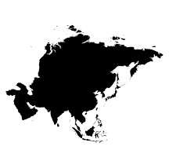

Asia

The history of Asian tea dates all the way back to the beginning of recorded history itself! Even the act of
pouring
tea in Asia has been refined into an art that takes years of discipline to perfect. Although credit is generally
given to the border areas of East Asia, South Asia, and Southeast Asia—specifically the region where India,
China,
and Burma meet—no one is really sure who decided to steep the first tea leaves into water or why. The act
possibly
predates written history.
China
Chinese tea usually consists of a pinch of green tea leaves dropped directly into a cup of kai shwui (boiling
water). Hot-water taps for preparing tea can even be found on trains, in airports, receptions, and most
public
waiting areas! China has developed a wide variety of teas purported to have positive effects on health;
however,
Long Jing (Dragon Well) tea from Hangzhou is China's most celebrated green tea.
Japan
Tea was brought to Japan from China during the ninth century by a traveling Buddhist monk. Japan integrated
the
act of preparing tea with Zen philosophy, creating the famous Japanese tea ceremony. Today, geisha train
from an
early age to perfect the art of making tea. In Japan, the art of using the making of tea to better oneself
is
known as teaism.
India
It is believed that tea was brought to India by the silk caravans that traveled from China to Europe
centuries
ago, though the Camellia sinensis is also native to India, and grew in the wild long before its true worth
was
realized. Native Indians used the leaves as part of their diet sometimes, though mostly it was used for its
medicinal properties. Today, there are as many as 43,293 tea gardens across the whole of Assam, 62,213 tea
gardens in the Nilgiris and only 85 tea gardens in Darjeeling.
Sri Lanka
Sri Lanka is known for their Ceylon Tea. In 1824, the British brought a tea plant from China to Ceylon (as
Sri
Lanka was known at the time). It was planted in the Royal Botanical Gardens, Peradeniya and is considered to
have been the first non-commercial tea plant in Sri Lanka. After nearly two decades in 1867, James Taylor,
Scottish by origin, planted 19 acres of tea in the city of Kandy in Ceylon, at the Loolecondra Estate as the
first commercial tea plantation.